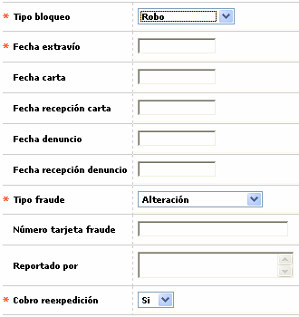
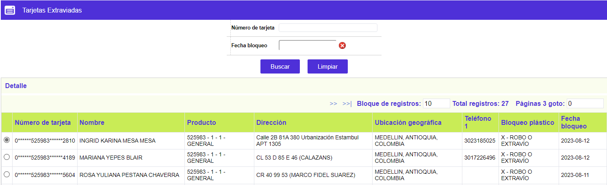

Tarjetas Extraviadas
A este formulario llegan las tarjetas a las que se les Aplicó un extravío, mediante la funcionalidad invocada desde el enlace Generar extravío en Consulta centralizada de tarjetas, Dichas tarjetas quedan bloqueadas y el sistema no permite efectuar más utilizaciones con las mismas. El tarjetahabiente deberá esperar a que surta el proceso de reexpedición con un nuevo número, para recibir el plástico correspondiente.
A continuación se ilustran los campos del formulario Aplicar extravío, en los que se ingresa la información requerida por la entidad, para certificar la causa del extravío.

Descripción de campos
Tipo bloqueo |
En este campo obligatorio tipo combo, se selecciona entre Robo o Uso fraudulento el tipo de evento por el cual se genera el extravío a la tarjeta. |
Fecha extravío |
Campo obligatorio en formato YYYY-MM-DD en el que se registra la fecha en la cual el cliente manifiesta haber extraviado la tarjeta o detectado el uso fraudulento de la misma. |
Fecha carta |
En este campo no obligatorio, se registra la fecha de la carta en la cual el cliente comunica a la entidad el extravío o fraude de su tarjeta. |
Fecha recepción carta |
Campo que permite registrar la fecha en la cual el cliente radica ante la entidad la carta en la que informa la pérdida o fraude de la tarjeta. |
Fecha denuncio |
En este campo se indica la fecha en la que el cliente presentó el denuncio ante las autoridades correspondientes por la pérdida o fraude cometido con su tarjeta. |
Fecha recepción denuncio |
Campo que permite registrar la fecha en la cual el cliente radica ante la entidad el denuncio de la pérdida o fraude. |
Tipo fraude |
En este campo obligatorio tipo combo se puede seleccionar entre Alteración, Banda magnética, Establecimiento, Extravío, Falsificación, Internet, Robo, Tarjeta no presentada, Tarjeta no recibido o Uso indebido, la causal asociada con el motivo que genera el reporte de extravío, siendo Extravío y Robo de aplicación exclusiva para el tipo bloqueo por robo. Es de anotar que esta información es de gran utilidad tanto para la entidad como para la compañía aseguradora a fin de poder determinar el origen o causa del fraude y tomar los correctivos necesarios. |
Número tarjeta fraude |
Cuando el fraude es por tarjeta gemela, en este campo se registra en caso de conocerse, el número de la tarjeta utilizad para la comisión del fraude. |
Reportado por |
En este campo se ingresa la información de la persona que efectuó el trámite de reporte del extravío o fraude de la tarjeta ante la entidad, que puede ser el propio cliente titular o un tercero autorizado por éste. |
Cobro reexpedición |
Campo obligatorio tipo combo en el que se indica Si o No se le debe cobrar al cliente la reexpedición del nuevo plástico que le será entregado en reemplazo del reportado como extraviado. |

Descripción de campos
Número de tarjeta |
En este campo se despliega el número actual de la tarjeta consultada y que fue bloqueada por extravío. |
Nombre |
Campo que contiene el nombre realzado en el plástico de la tarjeta. |
Producto |
Indica el bin, segmento, grupo de afinidad y descripción del producto al que pertenece la tarjeta. |
Dirección |
Muestra la dirección de correspondencia asociada con la tarjeta. |
Ubicación geográfica |
Campo que indica la ubicación geográfica a la que pertenece la dirección de correspondencia de la tarjeta. |
Teléfono 1 |
Señala el número telefónico reportado por el cliente y en el cual puede ser contactado. |
Bloqueo plástico |
Campo que ilustra con cuál de los bloqueos sobre el plástico, queda registrado en extravío. |
Fecha bloqueo |
Campo con formato YYYY-MM-DD que indica la fecha en la cual se aplicó el bloqueo por extravío a la tarjeta. |